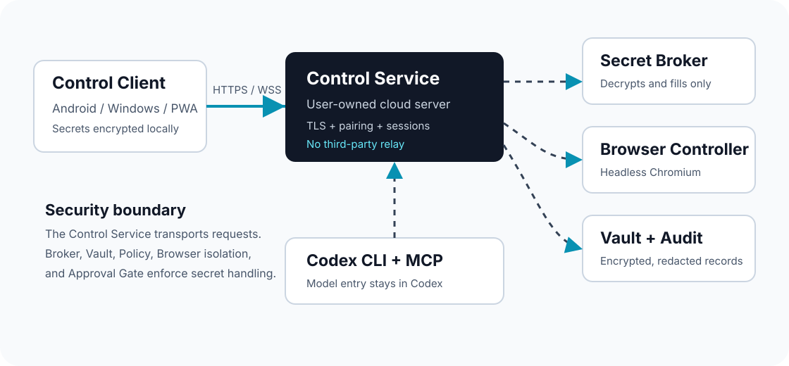
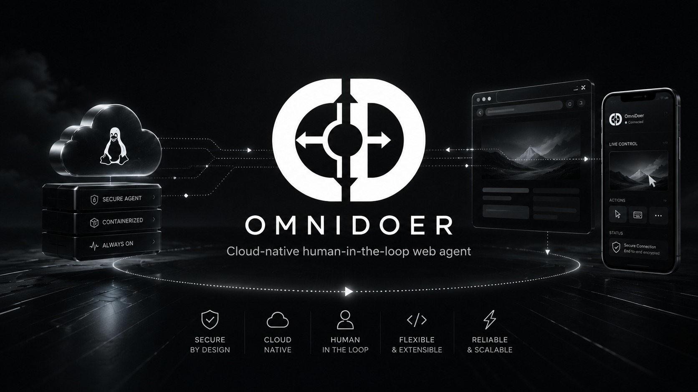
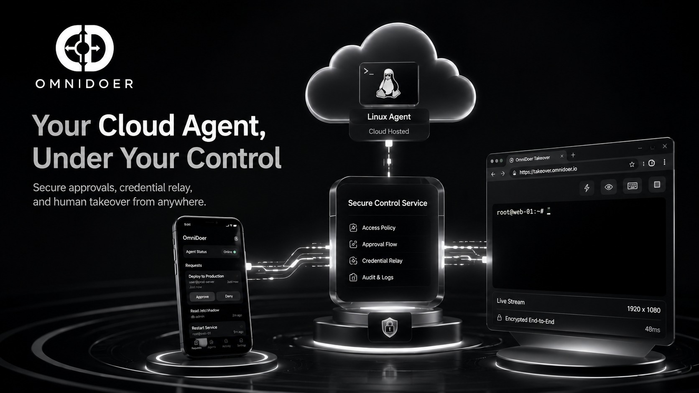
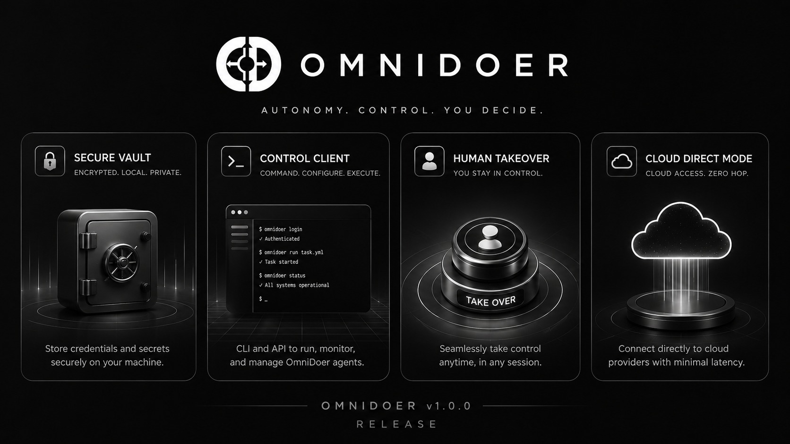

Codex Preserved
OmniDoer extends Codex CLI through MCP and does not create a default OpenAI API client or billing path.
The agent that does. A Codex CLI MCP sidecar for secure web actions where secrets remain with the broker, vault, and user-controlled client.
The agent may request an action. The broker checks the origin. The vault uses the secret. The browser receives the credential. The model never does.
OmniDoer extends Codex CLI through MCP and does not create a default OpenAI API client or billing path.
Users handle credentials, approvals, challenges, and human takeover from one PWA-friendly interface.
Android, Windows, and browser clients connect directly to the user's own cloud server with pairing and E2EE secret submission.
When a site needs a new account, the live registration page is proxied to the Control Client so the user completes signup and verification directly.

OmniDoer is built around a real controlled browser, cloud control service, user handoff, policy approvals, and audit evidence rather than a browser-only demo.




OmniDoer is a local-first and cloud-direct action runtime for Codex CLI. It helps operate websites while credentials, challenge answers, and payment approvals stay outside model context.
OmniDoer 是 Codex CLI 的 MCP/sidecar 扩展。Agent 可以行动，但密码、验证码、Cookie、私钥和支付凭据必须留在 Broker、Vault 与 Control Client 的安全边界内。
OmniDoer permite acciones web autorizadas por el usuario mediante Codex CLI, con aprobaciones humanas y sin entregar secretos al modelo.
OmniDoer ajoute à Codex CLI une couche MCP/sidecar pour agir sur le web avec un navigateur contrôlé, un coffre local et des approbations humaines.
OmniDoer erweitert Codex CLI um eine sichere MCP/Sidecar-Laufzeit. Geheimnisse bleiben im Broker, Vault und Control Client statt im Modellkontext.
OmniDoer は Codex CLI の安全な実行レイヤーです。秘密情報は Broker と Vault で扱われ、モデルには渡されません。
OmniDoer는 Codex CLI를 MCP/sidecar 방식으로 확장합니다. 비밀번호와 인증 코드는 Broker, Vault, Control Client 안에서만 처리됩니다.
Each language edition uses a dedicated cinematic CG poster with exact locally typeset text, so the visual system stays polished without sending secrets or relying on model-rendered copy.
Local development uses 127.0.0.1. Cloud Direct Mode is explicit and requires HTTPS/WSS, pairing, device identity, sessions, CSRF/origin protection, rate limits, and encrypted secret submission.
omnidoer control serve --cloud-direct --host 0.0.0.0 --port 8787 --public-url https://agent.example.com --behind-reverse-proxy
omnidoer control pair --print-qr